Materialpaket Advent für die 5. Klasse: 3 Lesespurgeschichten mit Rätselaufgaben (Weihnachtsstern, Plätzchen backen, Handnähen)

Materialpaket Winter und Advent für die 7. Klasse: 10 Lesespurgeschichten mit Rätselaufgaben fächerübergreifend (Weihnachtsoratorium, Südpol, Eishockey & mehr)

Der Hund – unser treues Haustier – Lesespurgeschichte mit Rätselaufgaben (Klasse 5)
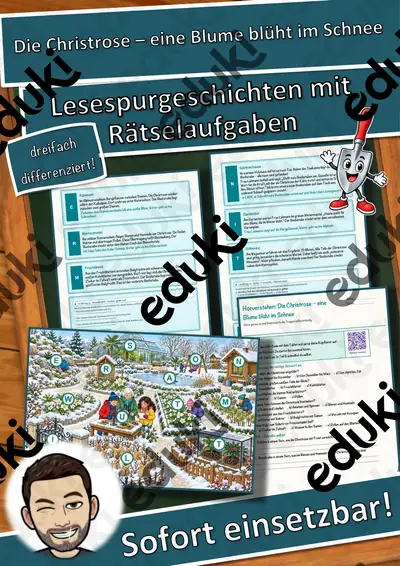
Die Christrose – eine Blume blüht im Schnee – Lesespurgeschichte mit Rätselaufgaben (Klasse 6)

Der Weihnachtsstern – eine Pflanze aus Mexiko – Lesespurgeschichte mit Rätselaufgaben (Klasse 5)

Kaninchen und Meerschweinchen artgerecht halten – Lesespurgeschichte mit Rätselaufgaben (Klasse 5)
Winterblues – warum uns im Winter das Licht fehlt – Lesespurgeschichte mit Rätselaufgaben (Klasse 8)

Erste Hilfe bei Kälte – Unterkühlung und Erfrierungen – Lesespurgeschichte mit Rätselaufgaben (Klasse 8)

Gentechnik – Chancen und Risiken abwägen – Lesespurgeschichte mit Rätselaufgaben (Klasse 10)

Rauchen und Vapes – warum Nikotin abhängig macht – Lesespurgeschichte mit Rätselaufgaben (Klasse 7)

Organspende – eine Entscheidung fürs Leben – Lesespurgeschichte mit Rätselaufgaben (Klasse 7)

Das Vogelfutterhaus – Lesespurgeschichte mit Rätselaufgaben (Klasse 5)
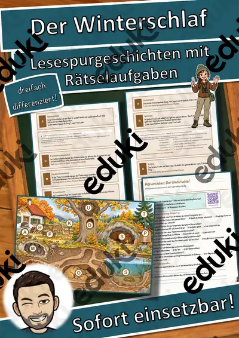
Der Winterschlaf – Lesespurgeschichte mit Rätselaufgaben (Klasse 7)

Das Naturkundemuseum – Lesespurgeschichte mit Rätselaufgaben (Klasse 5)

Der Vogelzug – Lesespurgeschichte mit Rätselaufgaben (Klasse 7)

Die Kastanie – Lesespurgeschichte mit Rätselaufgaben (Klasse 5)

Die Kieme – Lesespurgeschichte mit Rätselaufgaben (Klasse 8)

Der Muskel – Lesespurgeschichte mit Rätselaufgaben (Klasse 8)

Die DNA – Lesespurgeschichte mit Rätselaufgaben (Klasse 9)

Der Zellkern – Lesespurgeschichte mit Rätselaufgaben (Klasse 9)

Das Vogelei – Lesespurgeschichte mit Rätselaufgaben (Klasse 8)

Das Mitochondrium – Lesespurgeschichte mit Rätselaufgaben (Klasse 9)

Die Hecke – Lesespurgeschichte mit Rätselaufgaben (Klasse 8)

Die Mangrove – Lesespurgeschichte mit Rätselaufgaben (Klasse 8)

Der Bergsee – Lesespurgeschichte mit Rätselaufgaben (Klasse 8)

Der Fliegenpilz – Lesespurgeschichte mit Rätselaufgaben (Klasse 8)

Der Dachs – Lesespurgeschichte mit Rätselaufgaben (Klasse 8)
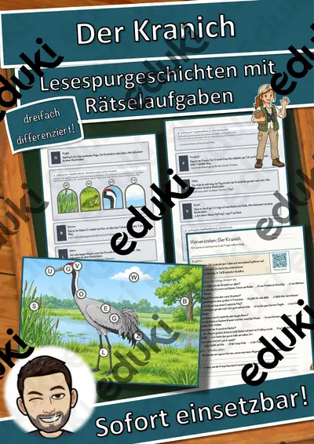
Der Kranich – Lesespurgeschichte mit Rätselaufgaben (Klasse 8)
Das Reh – Lesespurgeschichte mit Rätselaufgaben (Klasse 8)

Die Amsel – Lesespurgeschichte mit Rätselaufgaben (Klasse 8)
Der Apfelbaum – Lesespurgeschichte mit Rätselaufgaben (Klasse 8)

Die Ameise – Lesespurgeschichte mit Rätselaufgaben (Klasse 8)

Die Eiche – Lesespurgeschichte mit Rätselaufgaben (Klasse 8)

Der Biber – Lesespurgeschichte mit Rätselaufgaben (Klasse 8)

Der Adler – Lesespurgeschichte mit Rätselaufgaben (Klasse 8)

Die Schildkröte – Lesespurgeschichte mit Rätselaufgaben (Klasse 8)

Der Hummer – Lesespurgeschichte mit Rätselaufgaben (Klasse 8)

Der Tintenfisch – Lesespurgeschichte mit Rätselaufgaben (Klasse 8)
Der Mais – Lesespurgeschichte mit Rätselaufgaben (Klasse 8)

Der Weizen – Lesespurgeschichte mit Rätselaufgaben (Klasse 8)

Der Bär – Lesespurgeschichte mit Rätselaufgaben (Klasse 8)

Die Erdkröte – Lesespurgeschichte mit Rätselaufgaben (Klasse 8)

Der Hirschkäfer – Lesespurgeschichte mit Rätselaufgaben (Klasse 8)

Das Wildschwein – Lesespurgeschichte mit Rätselaufgaben (Klasse 8)
Der Wolf – Lesespurgeschichte mit Rätselaufgaben (Klasse 8)

Der Hamster – Lesespurgeschichte mit Rätselaufgaben (Klasse 8)

Die Heuschrecke – Lesespurgeschichte mit Rätselaufgaben (Klasse 8)

Der Luchs – Lesespurgeschichte mit Rätselaufgaben (Klasse 8)

Der Lachs – Lesespurgeschichte mit Rätselaufgaben (Klasse 8)

Der Delfin – Lesespurgeschichte mit Rätselaufgaben (Klasse 8)
Der Hase – Lesespurgeschichte mit Rätselaufgaben (Klasse 8)

Die Sonnenblume – Lesespurgeschichte mit Rätselaufgaben (Klasse 8)

Der Feuersalamander – Lesespurgeschichte mit Rätselaufgaben (Klasse 8)

Der Hirsch – Lesespurgeschichte mit Rätselaufgaben (Klasse 8)

Der Fuchs – Lesespurgeschichte mit Rätselaufgaben (Klasse 8)

Der Kaktus – Lesespurgeschichte mit Rätselaufgaben (Klasse 8)
Der Storch – Lesespurgeschichte mit Rätselaufgaben (Klasse 8)

Das Chamäleon – Lesespurgeschichte mit Rätselaufgaben (Klasse 8)

Das Krokodil – Lesespurgeschichte mit Rätselaufgaben (Klasse 8)
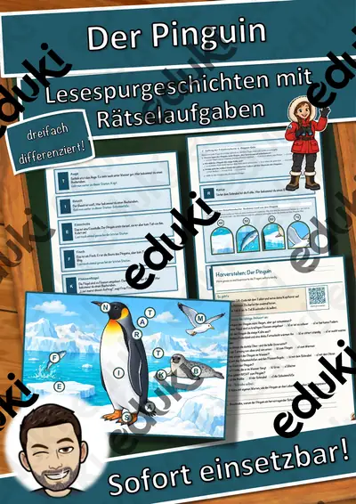
Der Pinguin – Lesespurgeschichte mit Rätselaufgaben (Klasse 8)

Der Hai – Lesespurgeschichte mit Rätselaufgaben (Klasse 8)

Der Löwenzahn – Lesespurgeschichte mit Rätselaufgaben (Klasse 8)

Die Eule – Lesespurgeschichte mit Rätselaufgaben (Klasse 8)

Die Libelle – Lesespurgeschichte mit Rätselaufgaben (Klasse 8)

Die Muschel – Lesespurgeschichte mit Rätselaufgaben (Klasse 8)

Die Tierzelle – Lesespurgeschichte mit Rätselaufgaben (Klasse 8)

Der Dickdarm – Lesespurgeschichte mit Rätselaufgaben (Klasse 8)

Die Tulpe – Lesespurgeschichte mit Rätselaufgaben (Klasse 8)

Der Regenwurm – Lesespurgeschichte mit Rätselaufgaben (Klasse 8)

Der Dünndarm – Lesespurgeschichte mit Rätselaufgaben (Klasse 8)

Das Rückenmark – Lesespurgeschichte mit Rätselaufgaben (Klasse 9)

Der Kehlkopf – Lesespurgeschichte mit Rätselaufgaben (Klasse 8)

Der Zahn – Lesespurgeschichte mit Rätselaufgaben (Klasse 8)

Das Moor – Lesespurgeschichte mit Rätselaufgaben (Klasse 8)

Der Knochen – Lesespurgeschichte mit Rätselaufgaben (Klasse 8)

Der Komposthaufen – Lesespurgeschichte mit Rätselaufgaben (Klasse 8)

Die Pflanzenzelle – Lesespurgeschichte mit Rätselaufgaben (Klasse 8)

Das Bodenprofil – Lesespurgeschichte mit Rätselaufgaben (Klasse 8)

Die Kläranlage – Lesespurgeschichte mit Rätselaufgaben (Klasse 8)

Die Bakterienzelle – Lesespurgeschichte mit Rätselaufgaben (Klasse 8)

Die Bestäubung – Lesespurgeschichte mit Rätselaufgaben (Klasse 9)

Das Nervensystem – Lesespurgeschichte mit Rätselaufgaben (Klasse 9)

Die Lunge – Lesespurgeschichte mit Rätselaufgaben (Klasse 8)

Das Lymphsystem – Lesespurgeschichte mit Rätselaufgaben (Klasse 9)

Reiz und Reaktion – Lesespurgeschichte mit Rätselaufgaben (Klasse 9)

Der Schädel – Lesespurgeschichte mit Rätselaufgaben (Klasse 8)

Das Hormonsystem – Lesespurgeschichte mit Rätselaufgaben (Klasse 9)

Die Fotosynthese – Lesespurgeschichte mit Rätselaufgaben (Klasse 8)

Der Magen – Lesespurgeschichte mit Rätselaufgaben (Klasse 8)

Die Wurzel – Lesespurgeschichte mit Rätselaufgaben (Klasse 8)

Die Bauchspeicheldrüse – Lesespurgeschichte mit Rätselaufgaben (Klasse 8)

Der Baumstamm – Lesespurgeschichte mit Rätselaufgaben (Klasse 8)

Die Zunge – Lesespurgeschichte mit Rätselaufgaben (Klasse 8)

Die Nase – Lesespurgeschichte mit Rätselaufgaben (Klasse 8)

Die Wirbelsäule – Lesespurgeschichte mit Rätselaufgaben (Klasse 8)

Das Kniegelenk – Lesespurgeschichte mit Rätselaufgaben (Klasse 8)

Das Herz – Lesespurgeschichte mit Rätselaufgaben (Klasse 8)

Die Biogasanlage – Lesespurgeschichte mit Rätselaufgaben (Klasse 9)

Die Biberburg – Lesespurgeschichte mit Rätselaufgaben (Klasse 8)

Der Ameisenhaufen – Lesespurgeschichte mit Rätselaufgaben (Klasse 8)

Die Leber – Lesespurgeschichte mit Rätselaufgaben (Klasse 9)

Die Haut – Lesespurgeschichte mit Rätselaufgaben (Klasse 8)

Der Kompost – Lesespurgeschichte mit Rätselaufgaben (Klasse 8)

Das Gehirn – Lesespurgeschichte mit Rätselaufgaben (Klasse 9)

Die Nervenzelle – Lesespurgeschichte mit Rätselaufgaben (Klasse 9)

Das Korallenriff – Lesespurgeschichte mit Rätselaufgaben (Klasse 8)

Die Niere – Lesespurgeschichte mit Rätselaufgaben (Klasse 8)

Das Schaf – Lesespurgeschichte mit Rätselaufgaben (Klasse 5)

Der Specht – Lesespurgeschichte mit Rätselaufgaben (Klasse 5)

Die Kuh – Lesespurgeschichte mit Rätselaufgaben (Klasse 5)

Das Pferd – Lesespurgeschichte mit Rätselaufgaben (Klasse 5)

Die Kartoffel – Lesespurgeschichte mit Rätselaufgaben (Klasse 5)

Der Pilz – Lesespurgeschichte mit Rätselaufgaben (Klasse 5)

Der Maulwurf – Lesespurgeschichte mit Rätselaufgaben (Klasse 5)

Das Eichhörnchen – Lesespurgeschichte mit Rätselaufgaben (Klasse 5)

Die Ente – Lesespurgeschichte mit Rätselaufgaben (Klasse 5)

Die Schnecke – Lesespurgeschichte mit Rätselaufgaben (Klasse 5)

Die Fledermaus – Lesespurgeschichte mit Rätselaufgaben (Klasse 5)

Der Fisch – Lesespurgeschichte mit Rätselaufgaben (Klasse 5)

Die Biene – Lesespurgeschichte mit Rätselaufgaben (Klasse 5)

Die Spinne – Lesespurgeschichte mit Rätselaufgaben (Klasse 5)

Der Frosch – Lesespurgeschichte mit Rätselaufgaben (Klasse 5)

Das Blatt – Lesespurgeschichte mit Rätselaufgaben (Klasse 6)

Die Blüte – Lesespurgeschichte mit Rätselaufgaben (Klasse 6)

Das Immunsystem – Lesespurgeschichte mit Rätselaufgaben (Klasse 8)

Die Zähne – Lesespurgeschichte mit Rätselaufgaben (Klasse 7)

Die Vererbung – Lesespurgeschichte mit Rätselaufgaben (Klasse 9)

Die Zelle – Lesespurgeschichte mit Rätselaufgaben (Klasse 8)

Das Ohr – Lesespurgeschichte mit Rätselaufgaben (Klasse 7)

Das Auge – Lesespurgeschichte mit Rätselaufgaben (Klasse 7)

Die Muskeln – Lesespurgeschichte mit Rätselaufgaben (Klasse 7)

Die Atmung – Lesespurgeschichte mit Rätselaufgaben (Klasse 7)

Die Verdauung – Lesespurgeschichte mit Rätselaufgaben (Klasse 7)

Das Skelett – Lesespurgeschichte mit Rätselaufgaben (Klasse 7)

Die Arztpraxis – Ein Praktikum beim Arzt – Lesespurgeschichte mit Rätselaufgaben (Klasse 9)

Der Hund – ein treues Haustier – Lesespurgeschichte mit Rätselaufgaben (Klasse 5)

Die Pflanze – Vom Samen zur Frucht – Lesespurgeschichte mit Rätselaufgaben (Klasse 5)

Der Baum – Lesespurgeschichte mit Rätselaufgaben (Klasse 6)
Der Igel – Lesespurgeschichte mit Rätselaufgaben (Klasse 6)

Die Schlange – Lesespurgeschichte mit Rätselaufgaben (Klasse 7)

Die Nahrungskette – Lesespurgeschichte mit Rätselaufgaben (Klasse 7)

Der Vogel – Lesespurgeschichte mit Rätselaufgaben (Klasse 7)

Die Bakterien – Lesespurgeschichte mit Rätselaufgaben (Klasse 8)

Die Honigbiene – Lesespurgeschichte mit Rätselaufgaben (Klasse 7)

Der Blutkreislauf – Lesespurgeschichte mit Rätselaufgaben (Klasse 7)

Der Bauernhof – Lesespurgeschichte mit Rätselaufgaben (Klasse 7)

Der Mischwald – Lesespurgeschichte mit Rätselaufgaben (Klasse 7)

Die Umwelt-Detektive – Lesespurgeschichte mit Rätselaufgaben (Klasse 5)

Das Geheimnis der fünf Sinne – Lesespurgeschichte mit Rätselaufgaben (Klasse 5)

Das Geheimnis des Wattenmeers – Lesespurgeschichte mit Rätselaufgaben (Klasse 5)

Das Geheimnis des Teichs – Lesespurgeschichte mit Rätselaufgaben (Klasse 5)

Das Geheimnis des Waldes (Lebensraum Wald) – Lesespurgeschichte mit Rätselaufgaben (Klasse 5)
Die Niere – Prüfungstraining Biologie (Klasse 8)
Die Zähne – Prüfungstraining Biologie (Klasse 8)

Die Vererbung – Prüfungstraining Biologie (Klasse 9)
Die Zelle – Prüfungstraining Biologie (Klasse 8)

Das Immunsystem – Prüfungstraining Biologie (Klasse 9)
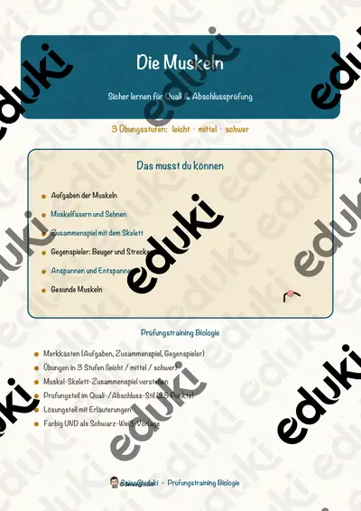
Die Muskeln – Prüfungstraining Biologie (Klasse 8)
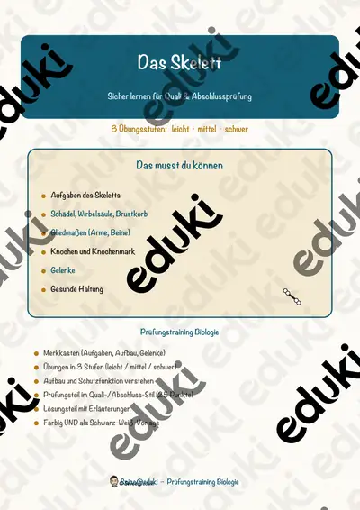
Das Skelett – Prüfungstraining Biologie (Klasse 8)
Die Atmung – Prüfungstraining Biologie (Klasse 8)
Die Verdauung – Prüfungstraining Biologie (Klasse 8)
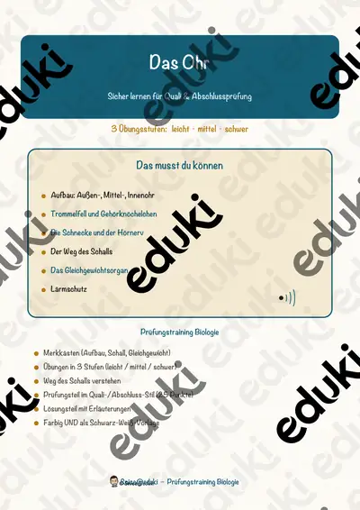
Das Ohr – Prüfungstraining Biologie (Klasse 8)
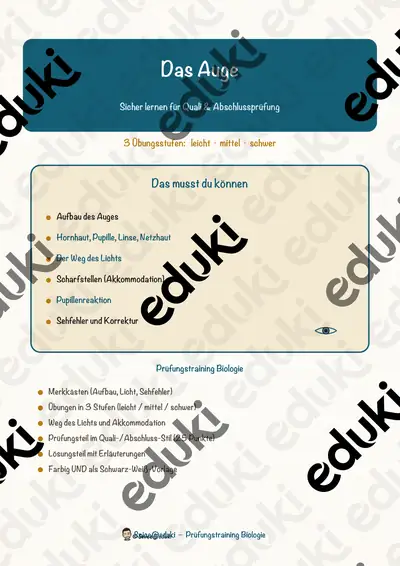
Das Auge – Prüfungstraining Biologie (Klasse 8)

Die Zellatmung – Prüfungstraining Biologie (Klasse 9)
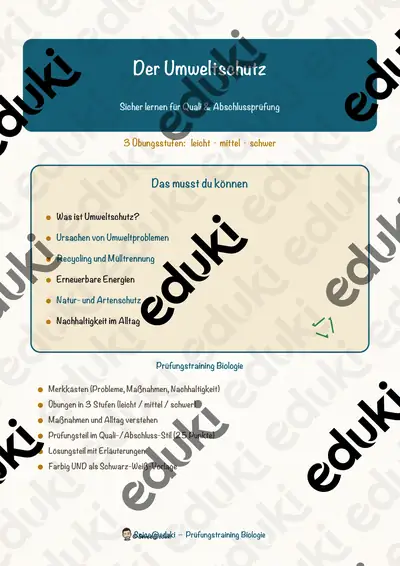
Der Umweltschutz – Prüfungstraining Biologie (Klasse 8)

Das Hormonsystem – Prüfungstraining Biologie (Klasse 9)
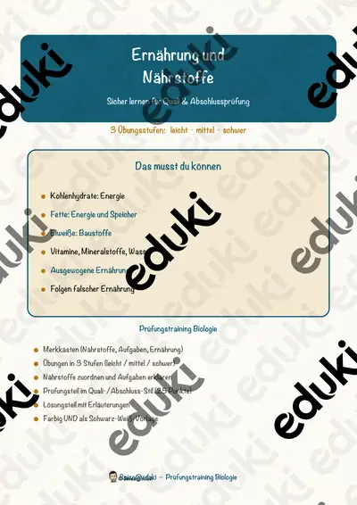
Ernährung und Nährstoffe – Prüfungstraining Biologie (Klasse 8)

Das Blut – Prüfungstraining Biologie (Klasse 9)

Die Evolution – Prüfungstraining Biologie (Klasse 9)
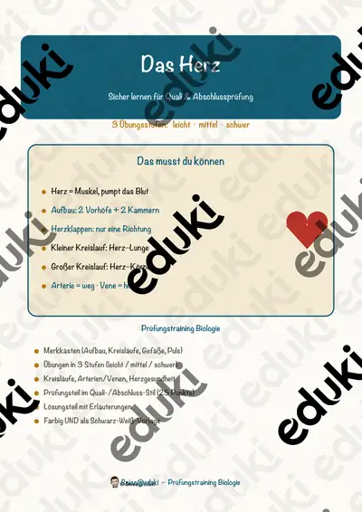
Das Herz – Prüfungstraining Biologie (Klasse 8)
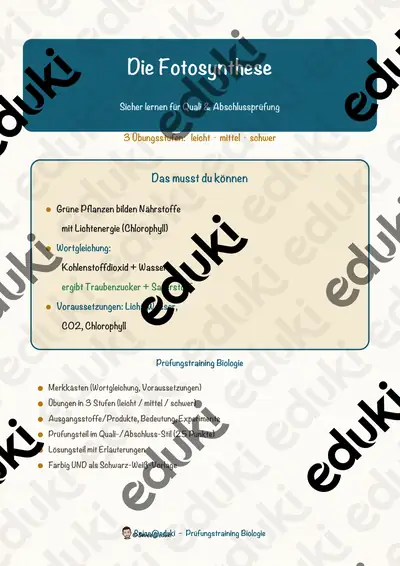
Die Fotosynthese – Prüfungstraining Biologie (Klasse 8)

Das Ökosystem – Prüfungstraining Biologie (Klasse 8)

Waschbrett Lückentext mit Wortspeicher Hörverstehen und Suchsel

Röhrenglocken Lückentext mit Wortspeicher Hörverstehen und Suchsel

Kazoo Lückentext mit Wortspeicher Hörverstehen und Suchsel

Guiro Lückentext mit Wortspeicher Hörverstehen und Suchsel

Gong Lückentext mit Wortspeicher Hörverstehen und Suchsel

Drumcomputer Lückentext mit Wortspeicher Hörverstehen und Suchsel

Claves Lückentext mit Wortspeicher Hörverstehen und Suchsel

Zither Lückentext mit Wortspeicher Hörverstehen und Suchsel

Waldhorn Lückentext mit Wortspeicher Hörverstehen und Suchsel

Vuvuzela Lückentext mit Wortspeicher Hörverstehen und Suchsel

Vibraphon Lückentext mit Wortspeicher Hörverstehen und Suchsel

Triangel Lückentext mit Wortspeicher Hörverstehen und Suchsel

Theremin Lückentext mit Wortspeicher Hörverstehen und Suchsel

Tamtam Lückentext mit Wortspeicher Hörverstehen und Suchsel

Tamburin Lückentext mit Wortspeicher Hörverstehen und Suchsel

Tabla Lückentext mit Wortspeicher Hörverstehen und Suchsel

Synthesizer Lückentext mit Wortspeicher Hörverstehen und Suchsel

Steeldrum Lückentext mit Wortspeicher Hörverstehen und Suchsel

Sousaphon Lückentext mit Wortspeicher Hörverstehen und Suchsel

Sitar Lückentext mit Wortspeicher Hörverstehen und Suchsel

Schellenring Lückentext mit Wortspeicher Hörverstehen und Suchsel

Schellenkranz Lückentext mit Wortspeicher Hörverstehen und Suchsel

Schalmei Lückentext mit Wortspeicher Hörverstehen und Suchsel

Sackpfeife Lückentext mit Wortspeicher Hörverstehen und Suchsel

Röhrentrommel Lückentext mit Wortspeicher Hörverstehen und Suchsel

Rassel Lückentext mit Wortspeicher Hörverstehen und Suchsel

Rahmentrommel Lückentext mit Wortspeicher Hörverstehen und Suchsel

Panflöte Lückentext mit Wortspeicher Hörverstehen und Suchsel

Oud Lückentext mit Wortspeicher Hörverstehen und Suchsel

Okarina Lückentext mit Wortspeicher Hörverstehen und Suchsel

Nyckelharpa Lückentext mit Wortspeicher Hörverstehen und Suchsel

Mundharmonika Lückentext mit Wortspeicher Hörverstehen und Suchsel

Melodica Lückentext mit Wortspeicher Hörverstehen und Suchsel

Maultrommel Lückentext mit Wortspeicher Hörverstehen und Suchsel

Marimba Lückentext mit Wortspeicher Hörverstehen und Suchsel

Maracas Lückentext mit Wortspeicher Hörverstehen und Suchsel

Mandoline Lückentext mit Wortspeicher Hörverstehen und Suchsel

Leier Lückentext mit Wortspeicher Hörverstehen und Suchsel

Laute Lückentext mit Wortspeicher Hörverstehen und Suchsel

Kuhglocke Lückentext mit Wortspeicher Hörverstehen und Suchsel

Koto Lückentext mit Wortspeicher Hörverstehen und Suchsel

Kornett Lückentext mit Wortspeicher Hörverstehen und Suchsel

Konzertina Lückentext mit Wortspeicher Hörverstehen und Suchsel

Klangschale Lückentext mit Wortspeicher Hörverstehen und Suchsel

Kastagnetten Lückentext mit Wortspeicher Hörverstehen und Suchsel

Kalimba Lückentext mit Wortspeicher Hörverstehen und Suchsel

Harmonium Lückentext mit Wortspeicher Hörverstehen und Suchsel

Handpan Lückentext mit Wortspeicher Hörverstehen und Suchsel

Hackbrett Lückentext mit Wortspeicher Hörverstehen und Suchsel

Glockenspiel Lückentext mit Wortspeicher Hörverstehen und Suchsel

Gambe Lückentext mit Wortspeicher Hörverstehen und Suchsel

Flügelhorn Lückentext mit Wortspeicher Hörverstehen und Suchsel

Euphonium Lückentext mit Wortspeicher Hörverstehen und Suchsel

Erhu Lückentext mit Wortspeicher Hörverstehen und Suchsel

E-Gitarre Lückentext mit Wortspeicher Hörverstehen und Suchsel

E-Bass Lückentext mit Wortspeicher Hörverstehen und Suchsel

Drehleier Lückentext mit Wortspeicher Hörverstehen und Suchsel

Djembe Lückentext mit Wortspeicher Hörverstehen und Suchsel

Didgeridoo Lückentext mit Wortspeicher Hörverstehen und Suchsel

Darbuka Lückentext mit Wortspeicher Hörverstehen und Suchsel

Conga Lückentext mit Wortspeicher Hörverstehen und Suchsel

Charango Lückentext mit Wortspeicher Hörverstehen und Suchsel

Cembalo Lückentext mit Wortspeicher Hörverstehen und Suchsel

Celesta Lückentext mit Wortspeicher Hörverstehen und Suchsel

Cajon Lückentext mit Wortspeicher Hörverstehen und Suchsel

Bouzouki Lückentext mit Wortspeicher Hörverstehen und Suchsel

Bongo Lückentext mit Wortspeicher Hörverstehen und Suchsel

Becken Lückentext mit Wortspeicher Hörverstehen und Suchsel
Keine Materialien gefunden – versuch einen anderen Suchbegriff oder Filter.